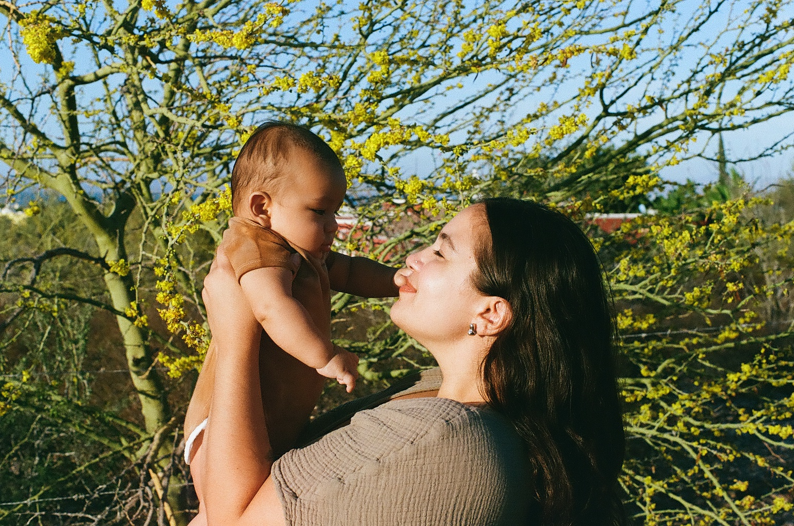

<section class="bg-secondary">
    <div class="container">
        <div class="row">
            <div class="col-md-6 col-12 p-50 text-center">
                <h2 class="section-heading">Maternal-centered care, from my hands to your home.</h2>
                <hr class="light">
                <p class="text-faded">I’m Simone — a postpartum doula walking beside families as they cross the
                    threshold into parenthood.</p>
                <p class="text-faded">My role is to protect the sacred pause that follows birth.
                    With grounded care and steady presence, I hold space for rest, recovery, and the raw beauty of this
                    becoming.
                </p>
                <p>
                    This is more than support.
                    It’s sanctuary.
                </p>
            </div>
            <div class="col-md-6 col-12 text-center">
                
            </div>
        </div>
        <div class="row">
            <div class="col-12 p-50 text-center">
                <h2 class="section-heading">Why I Do This</h2>
                <hr class="light">
                <p class="text-faded">This work began with what’s too often overlooked:
                    The quiet ache of postpartum going unseen.</p>
                <p class="text-faded">We live in a world that asks mothers to give endlessly and need nothing.
                    That story ends here.</p>
                <p>
                    You deserve to be held — not just to survive, but to be fully supported in your transformation.
                </p>
            </div>
        </div>
        <div class="row">
            <div class="col-12 p-50 text-center">
                <h2 class="section-heading">My approach</h2>
                <hr class="light">
                <p class="text-faded">My care is gentle, practical, and deeply attuned.
                    There’s no script — just presence. No pressure — just space.</p>
                <p class="text-faded">I center your body, your story, your pace.
                    Together, we nourish your healing, build sustainable systems, and honor what this season is bringing
                    up.</p>
                <p class="text-faded">Because postpartum isn’t something to get through.
                    It’s a sacred becoming.</p>
                <p>
                    This is <strong>maternal-centered care</strong>: personal, intuitive, real.
                </p>
            </div>
        </div>
        <div class="row">
            <div class="col-12 p-50 text-center">
                <h2 class="section-heading">What I Believe</h2>
                <hr class="light">
                <p class="text-faded">Postpartum is a rite of passage — a time to be nourished, witnessed, and deeply
                    supported.</p>
                <p class="text-faded">Support should feel like a natural extension of your rhythm — not a disruption.
                </p>
                <p>
                    When mothers are cared for, families are stronger.
                    And the world softens.
                </p>
            </div>
        </div>
        <div class="row">
            <div class="col-12 p-50 text-center">
                <h2 class="section-heading">My approach</h2>
                <hr class="light">
                <p class="text-faded">Trained birth doula. Yoga teacher. Mother.</p>
                <p class="text-faded">But the real wisdom lives in the work —
                    in the slow mornings, warm meals, quiet listening, and steady hands.</p>
                <p>
                    These are the moments that shaped me.
                    And it’s an honor to offer it.
                </p>
            </div>
        </div>
    </div>
</section>